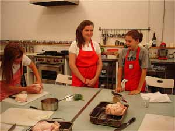
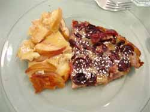

Wash those pots and pans

I did something different today: I volunteered as assistant at the Sweetwater Cooking Institute on E. Carson Street. It was the last day of a week-long intensive cooking series, and today the class covered roasting. In addition to learning how to truss chickens for the oven (something I don’t normally do) the class learned how to make stock, deglaze the roasting pan and make sauce to serve with the chicken, remove grease from the top of stock or sauce, and carve chicken for serving. They also made two kinds of clafoutis, cherry and nectarine, as well as spinach salad with bacon and mushrooms dressed with an unusual curry vinaigrette, and baked stuffed tomatoes. In addition to everything else, the class learned how to make avgolemono soup, using the chicken stock they made themselves.
I was a little disappointed that I didn’t get to help more with the cooking, or actually at all. Assisting basically consisted of washing vast amounts of dishes and helping to keep the work areas clear so the class members could have what they needed to keep cooking. Gaynor Grant, the chef/owner of the school is very nice and seems quite talented. She obviously works hard to think of new ideas for classes, like couples’ nights, singles’ classes, girls’ nights out, a class she calls “Frozen Assets” where she teaches class members some basic dishes they can prepare on the weekends when they have time to cook, freeze them, and then pull them out for dinner during the work week.

The best part of the day was sitting down to a lovely lunch that comprised all the dishes cooked by these darling young people. Here’s a photo of the desserts; they were very tasty. I’m really not sure I’d want to do this again, though, it was an awful lot of work for a plate of roast chicken and some salad, and if the class had been larger there would have been so many more dishes to wash. (While I was there my contractor called to say they would not be working on the kitchen today because his grandmother died. “She must have been young,” I said. Because he’s pretty young. But no, she was 87. Um, not to seem callous, but do all his employees have to take the day off, too? It’s been three weeks now, and the kitchen still looks like a bomb went off in it; I think he could have sent someone over to do some painting even if he couldn’t work himself.)
Comments
It sounds like a lot of work for a plate of roast chicken but it also sounds fun.
Have you reached a point where you’re suffering from home-cooked meal withdrawal? It’s hard not to have a kitchen and based on the stories one hears, kitchen renovations all seem to drag on forever. Although hopefully, you’re coming down the home stretch — despite the fact that the entire crew had funeral leave today.
Sounds like a fun time at this class even if your work was dull.
Re degreasing: my mother serves roast chicken with the drippings from the pan as “gravy,” no degreasing or deglazing. Sometimes she’ll just spoon pure schmaltz over your chicken and potatoes. It’s soooo good.
Sounds like so much fun! Probably more fun taking the class than washing their dishes, but still.
I’m sorry about the kitchen crew all getting the day off. Hopefully they’ll try to make up for the day by being really productive.
Hot work in a heat wave, that.
It is churlish, I know, but I tend towards suspecting the death of a grandmother, offered as an excuse for non-appearance or lateness.You hear it as frequently as “the dog ate my homework.” , or “there was a pileup on the parkway.” Admitedly, many people nowadays have more than 3 grandmothers, but still….
Add a comment